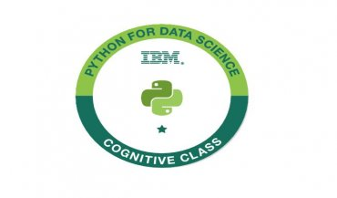

Creative | Results Oriented | Data Driven
I have spent nearly 4 years developing and supporting massive business initiatives in a highly matrixed business environment at Caterpillar. As a highly skilled facilitator, I have developed and delivered several proof of concepts, site migrations, internal monitoring scripts and Watson Explorer engine upgrades.My experience spans digital marketing, strategic planning, event management and the Enterprise Search application.
I am currently pursuing my master's degree in Information Systems at Carl H. Lindner College of Business at the University of Cincinnati.
I am also a Graduate Assistant at University of Cincinnati Online where I work as a Web / CRM developer.
More Information
Professional Work Experience
Univeristy of Cincinnati Online
Cincinnati,Ohio
Graduate Assistant, Web/CRM developer
Oversee social media, SEO, WordPress, UX, and CRM strategy for the University of Cincinnati Online.
Caterpillar India Pvt. Ltd.
Bengaluru, India
IT Analyst 1
Setup and maintained the searh functionality for Cat.com and its subsadaries.
Assigned the no-index tags to cat.com content and configured the search engine to honor those tags
Implemented site addition, site rename and removal for Cat.com, Caterpillar.com, FG Wilson and Perkins.com, and search functionality setup for 17 internal sites and 3 DEG sites in 2017 and 2018
Created several internal monitoring scripts in python and automated the manual reporting process using Python saving nearly 120 hours of an analyst’s time annually

Python for Data Science Certification
Issued by IBM
The badge earner is able to write their own Python scripts and perform basic hands-on data analysis using IBM's Jupyter-based lab environment.
View Badge

Google Analytics Certification
Successfully completing the course on "Advanced Google Analytics"
Skills and Expertise
My area of include: Salesforce, HubSpot, Tableau, Google Analytics, XML, HTML, Python, SEMRush, IBM Watson Explorer.
Get In Touch
-
Address
222 Senator Place
Cincinnati, OH 45220
United States
-
Phone
513-208-1056
-
Email
nairrj@mail.uc.edu

{kind=link}
{kind=link}
{kind=link}